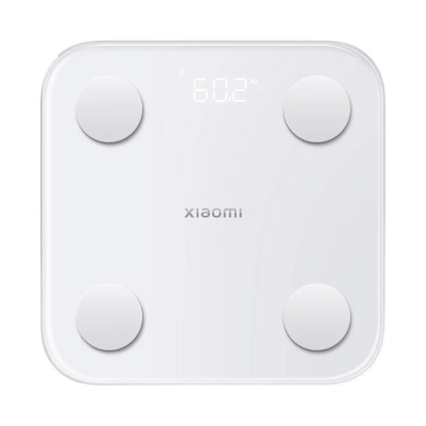

Plancha Alisadora para Cabello Estilos 2 en 1, S1A100WM-F
Remington · Modelo S1A100WM-F
El modelo S1A100WM-F de Remington está pensado para un uso práctico y funcional. Entre sus características destacan Celulares por Marca Ver Todo Celulares Apple Samsung Xiaomi Honor Motorola Huawei Blu; Ver Todo Celulares; Ver Todo Accesorios para Celular; Cables, Cargadores y BaterÃas.
- Celulares por Marca Ver Todo Celulares Apple Samsung Xiaomi Honor Motorola Huawei Blu
- Ver Todo Celulares
- Accesorios para Celular Ver Todo Accesorios para Celular Cables, Cargadores y BaterÃas Bases y Holders Tarjetas de Memoria AudÃfonos Estuches y Temperados Para Carro Para iPhone
- Ver Todo Accesorios para Celular
- Cables, Cargadores y BaterÃas
- Bases y Holders
- Tarjetas de Memoria
- AudÃfonos
- Estuches y Temperados
- Para Carro
Especificaciones
| Modelo | S1A100WM-F |
|---|---|
| Marca | Remington |
| Número de parte | S1A100WM-F |
| Color | Negro/Rojo |
| Voltaje | Bivoltaje |
| Niveles temperatura | 160 °C - 200 °C |
| Apagado automático | Sà |
| Dimensiones (Alto x Ancho x Largo) | 3 x 3.6 x 31.05 cm |
| GarantÃa | 2 años por defectos de fabrica |
| Peso | 700 g |
| SKU | UM009PVS |
| Publicado en Unimart.com | 07-04-26 |
| Feedback | ¿Viste un precio más bajo? Queremos saber. |
Fuente principal: https://www.unimart.com/products/remington-alisador-y-ondulador-estilos-2-en-1-s1a100wm-f